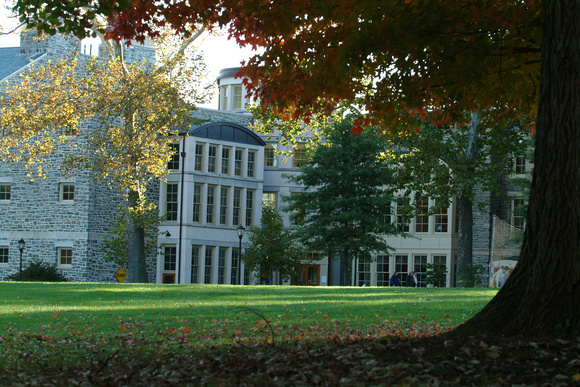

Haverford is a liberal arts college in Haverford, Pennsylvania, which is 10 miles from Philadelphia. The school was founded in 1833, its setting is suburban, and it utilizes a semester-based academic calendar. One of the special opportunities at Haverford is the ability given to students to take courses at the nearby schools, Swarthmore College and the University of Pennsylvania. Haverford has a 9:1 student-faculty ratio, with 82.3% of its classes having fewer than 20 students. The top five majors at Haverford are biology, psychology, english, economics, and political science. While there are no fraternities or sororities at Haverford, there are 134 different student organizations that can be participated in. The mascot for Haverford is the black squirrel. Notable alumni include George Segal, Chevy Chase, and Juan Williams.
